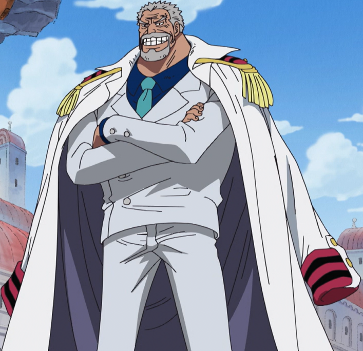
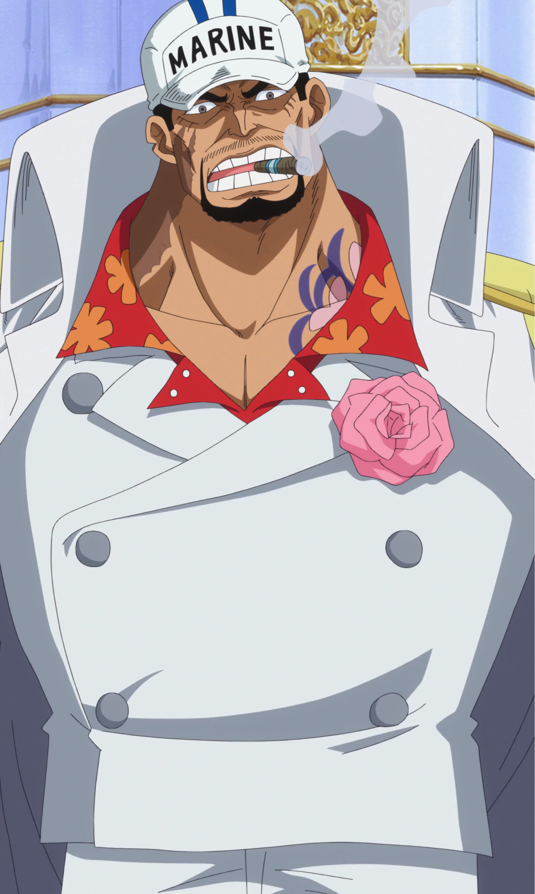
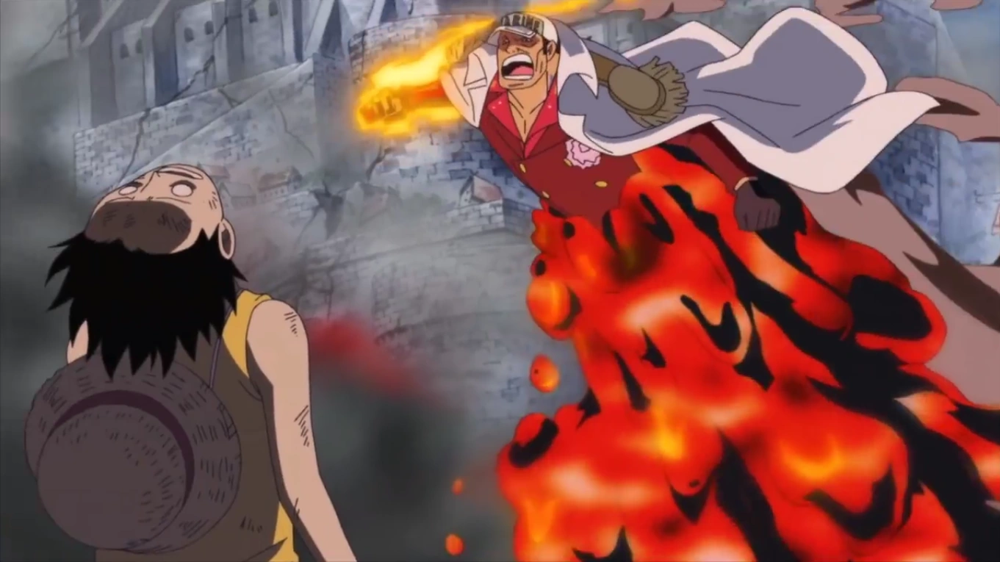
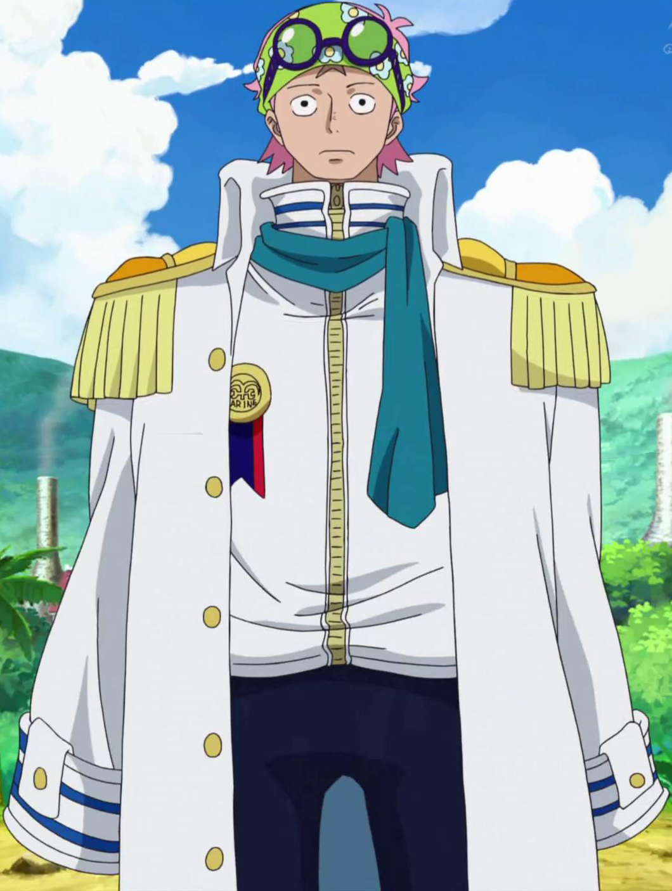
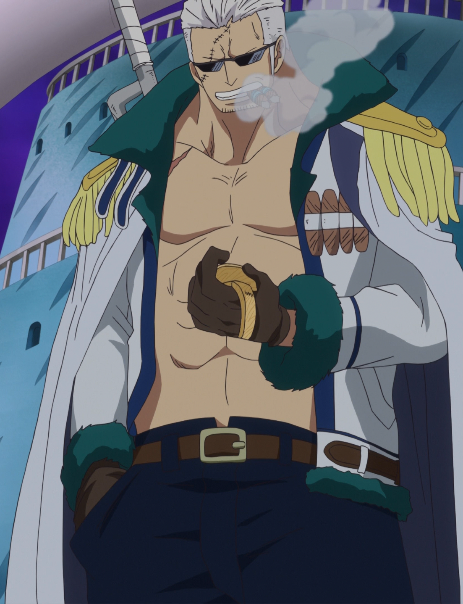
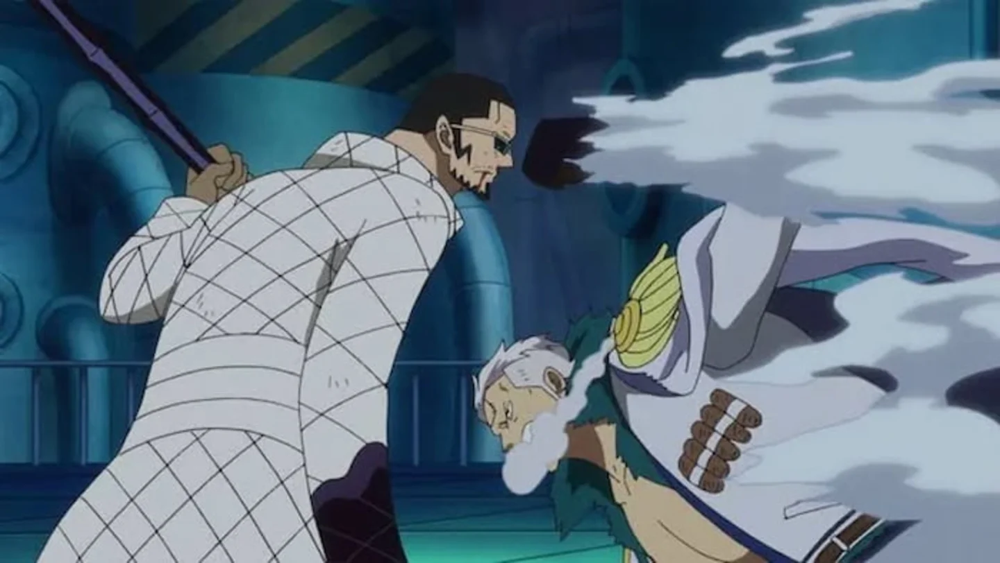
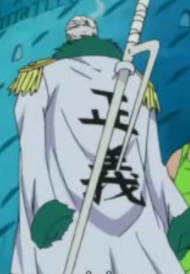
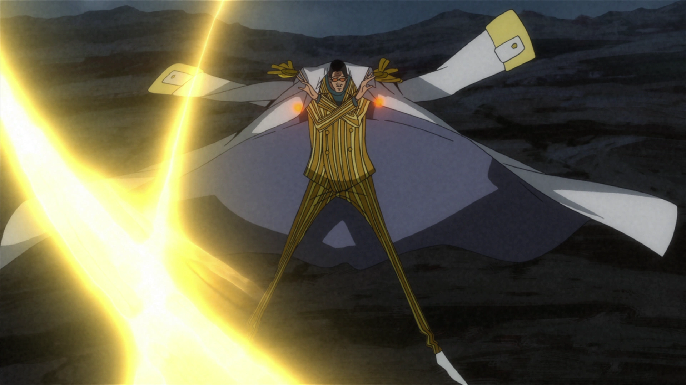
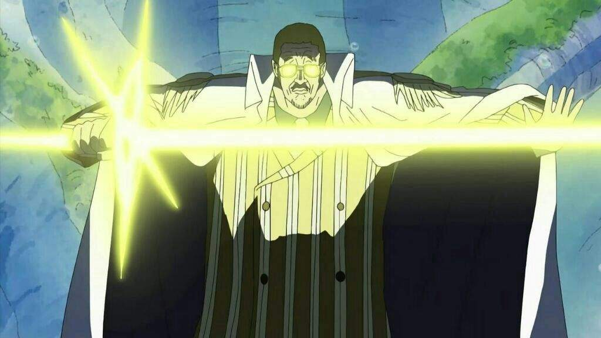

Monkey D. Garp, más conocido por sus epítetos Garp el Puño o el Héroe de la Marina, es un vicealmirante del cuartel general de la Marina en calidad de instructor de nuevos reclutas.
Él es el padre de Dragon el Revolucionario, el abuelo paterno de Luffy Sombrero de Paja, así como también el abuelo adoptivo de Ace Puño de Fuego.
Debido a su papel y acciones, es el principal antagonista del arco del regreso a Water 7 y un destacable antagonista secundario del arco de Marineford.
Personalidad
Garp despliega un nivel de inteligencia aproximadamente igual al de Luffy, aunque en ocasiones parece más distraído que su nieto. Debido a su temperamento fluctuante, Garp nunca
acepta excusas de ninguna clase, aunque es bastante malo creando las suyas, y en ocasiones, refuerza su punto de vista con sus puños de "amor", como él dice.
Es bastante excéntrico y tiene un sentido común muy extraño. Comparte con sus nietos un gusto desmedido por la comida.
Haki
Garp es una de las pocas personas capaces de utilizar los tres tipos de haki: haki de observación, haki de armadura y haki del rey.
Garp ha demostrado una habilidad extremadamente competente en el uso del haki de armadura, pudiendo herir a Luffy varias veces, sobreponiéndose su cuerpo de goma.
Además puede utilizar la aplicación avanzada de emitir haki de armadura de sus manos, lo que le permite atacar a sus oponentes sin contacto físico.
Garp puede utilizar haki del rey a un nivel avanzado. Su maestría con este tipo de haki es tal que puede crear ondas destructivas de un tamaño inconmensurable.
Más notablemente, es uno de los pocos de usuarios que son capaces de utilizar la aplicación avanzada de su haki en partes de su cuerpo u objetos.
Sakazuki

Sakazuki, más conocido como Akainu, es el almirante de la flota del cuartel general de la Marina. Actuó como antagonista principal en el arco de Marineford y, como tal, como uno
de los antagonistas centrales de la saga de la Guerra en la Cumbre. Tras su ascenso a líder de los marines, se ha convertido en uno de los antagonistas principales de la serie.
Personalidad
Sakazuki es un hombre de fuerte temperamento, inexpresivo y sombrío, manteniendo siempre una insondable e impenetrable rectitud. Él es, ante todo, un creyente inflexible de la
justicia absoluta.
Fruta del diablo
Sakazuki es el usario de la fruta magu magu, le da la capicidad de transformar su cuerpo en magma y manipularlo como quiera. Esta es un tipo de fruta del diablo de tipo logia.
El calor destructivo y los poderes explosivos del magma le permiten a Sakazuki causar un daño masivo e incluso cambiar radicalmente el clima del lugar en el que sus habilidades
son liberadas en su máximo exponente.

Haki
Sakazuki puede utilizar dos de los tres tipos de haki, estos son: el haki de observación y el haki de armadura.
Koby

Koby, también conocido como el Héroe del Incidente de Rocky Port o simplemente Héroe, es un capitán del cuartel general de la Marina y miembro de la unidad especial secreta SWORD.
Antes del salto temporal, formaba parte del equipo del vicealmirante Garp junto a su compañero Helmeppo.
Antes de trabajar para la Marina, formó parte involuntariamente de los Piratas de Alvida hasta que fue liberado por Luffy, con quien entabló una profunda y duradera amistad.
Personalidad
Su miedo lo obligó incluso a reprimir su deseo de ser un Marine. Sus temores se reflejaron en los sueños de otras personas, como él dijo que sería imposible que Luffy conquistara
el Grand Line y convertirse en el rey de los piratas, a pesar de que principalmente estaba pensando las consecuencias de sus propias posibilidades de sobrevivir. Finalmente con la
ayuda del optimismo sin límites de Luffy encontró el coraje para perseguir su sueño escapando de Alvida y convirtiéndose en un infante de Marina.
Haki
Koby puede usar dos de los tres tipos de haki, son: el haki de observación y el haki de armadura.
Smoker

Es un vicealmirante de la Marina, comandante de la base del G-5 y líder de su primera unidad, en la que trabaja junto a Tashigi, su mano derecha.
Es el antagonista principal del arco de Loguetown y un antagonista secundario del arco de Marineford. En Punk Hazard suscribió una alianza temporal con Monkey D. Luffy y Trafalgar Law.
Personalidad
Es un hombre duro, aunque a diferencia de muchos otros marines no sigue los ideales de la "Justicia Absoluta" y bajo cualquier circunstancia; sino que se guía por su propia escala de valores.
En Arabasta después de la captura de Crocodile y la caída de Baroque Works gracias a la intervención de los de Sombrero de Paja, el Gobierno Mundial le atribuyó el mérito de dichos logros a Smoker,
su subordinada Tashigi y la división que estaba a su cargo. Ese intento por ocultar la verdad por parte del gobierno indignó enormemente a Smoker, y el hecho de que se le atribuyeran unos méritos
que no le correspondían le enfureció.
Se le puede describir como un hombre testarudo, gruñón y muy orgulloso; pero a pesar de tener un aspecto amenazador y dar una impresión de dureza, ha demostrado tener sensibilidad en algunos momentos.
Fruta del diablo
Smoker comió la fruta Moku Moku, fruta del diablo de tipo logia que le da la capacidad de convertirse y generar humo, también puede cambiar la densidad del humo para poder apresar con él a personas.
Al igual que con casi todas las frutas logia, lo hace inmune a los ataques físicos sin haki de armadura.

Haki
Puede usar dos tipos de haki, que son el de observación y armadura.
Arma
El Nanashaku Jitte es el arma primaria de Smoker, el cual contiene piedra marina lo que le permite suprimir los poderes de los usuarios de frutas del diablo con la intención de capturarlos.

Borsalino

Más conocido como Kizaru es uno de los tres almirantes del cuartel general de la Marina. Debido a su papel y acciones es uno de los antagonistas principales del los arcos de Sabaody, Marineford
y Egghead. Asimismo, actuó como antagonista secundario en las películas Film Z y Film Red.
Personalidad
Borsalino es un hombre con un temperamento relajado, despistado y despreocupado; hablando a un ritmo muy lento y omitiendo, a menudo, la última palabra de sus oraciones, algo que contrasta con
la sensación de velocidad que transmite el poder de su fruta del diablo. se considera a sí mismo un simple mandado que se limita a obedecer a sus superiores sin cuestionarles independientemente
de lo que se le pida hacer aunque vaya en contra de sus deseos.
Borsalino muestra una total falta de misericordia hacia los criminales. Quizá la característica más destacada de la forma de ser de Borsalino sea su despreocupación, ya que incluso en las
situaciones más peligrosas mantiene una actitud indiferente y apática. Su actitud calmada y confiada durante su enfrentamiento con Barbablanca en la Guerra en la Cumbre en el cual Borsalino
ignoró su presencia para romper la llave de las esposas de Ace que Luffy sostenía. Al igual que el hecho de ignorar con desinterés la amenaza de Beckman para seguir persiguiendo a Luffy y Law
en su fuga.
Fruta del diablo
Borsalino consumió la fruta Pika Pika, una fruta del diablo de tipo logia que le otorga la capacidad de transformar su cuerpo en luz y manipularla a voluntad. Con esta habilidad, es capaz de moverse
y atacar a la velocidad de la luz, así como disparar ráfagas de energía desde la punta de sus dedos o sus pies con extremada precisión. Su poder es muy destructivo y provoca grandes explosiones.
Haki
Es capaz de usar dos tipos de haki, que son el de observación y armadura.
Arma
Borsalino ha demostrado ser un excelente espadachín, siendo capaz de enfrentarse a Rayleigh y a Z con su espada de luz.
